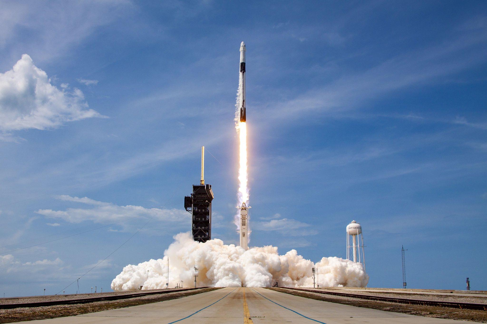
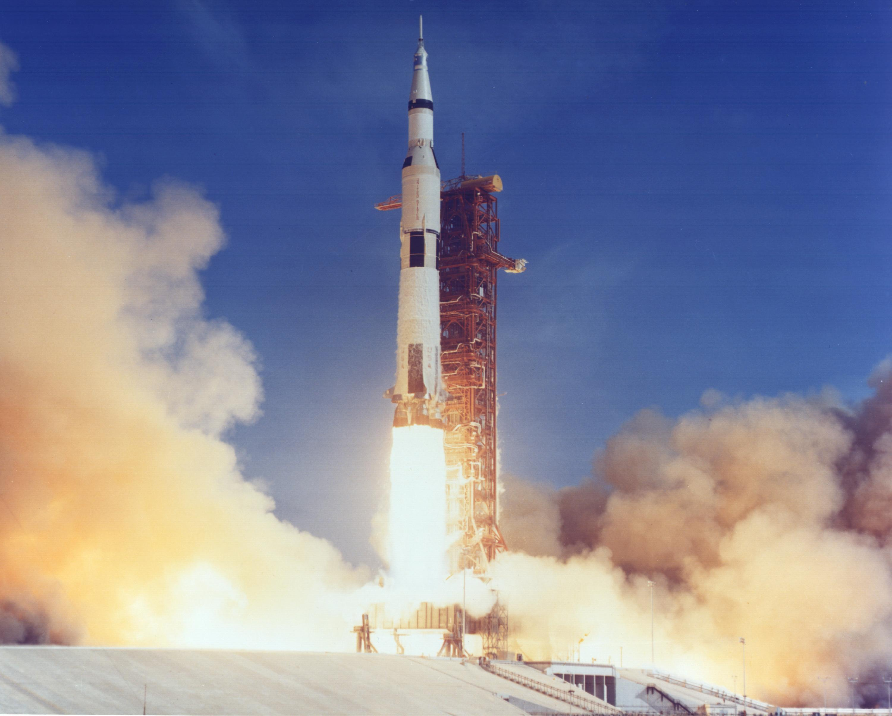
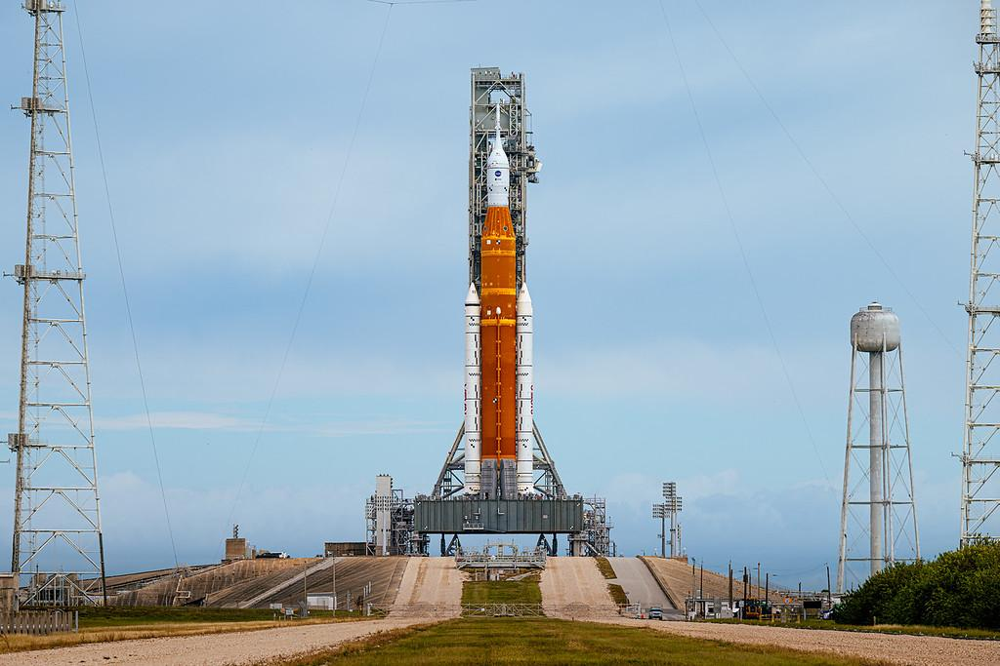
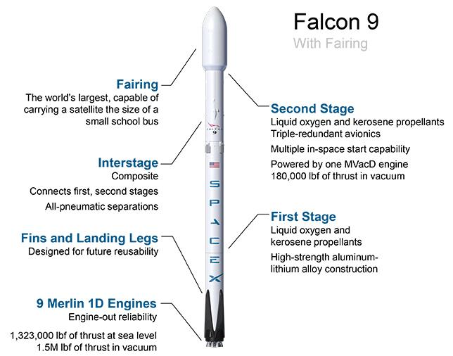

Falcon 9
Falcon 9 er en rakett utviklet av SpaceX. Den har to trinn og brukes til å sende satellitter, forsyninger og astronauter ut i verdensrommet. Det spesielle er at det første trinnet kan lande og brukes igjen.

Falcon 9 er en rakett utviklet av SpaceX. Den har to trinn og brukes til å sende satellitter, forsyninger og astronauter ut i verdensrommet. Det spesielle er at det første trinnet kan lande og brukes igjen.

Saturn V var raketten som sendte astronauter til månen under Apollo-programmet. Den var omtrent 111 meter høy og besto av tre trinn. Raketten er fortsatt en av de mest kjente i romfartens historie.

SLS er en kraftig rakett utviklet av NASA for Artemis-programmet. Den er laget for å sende Orion-romfartøyet mot månen og gjøre nye bemannede måneferder mulig.

En rakett beveger seg fremover ved å skyve gass med høy hastighet bakover. Mange raketter har flere trinn som skilles fra hverandre under flygingen. Slik blir raketten lettere og kan nå høyere hastighet.